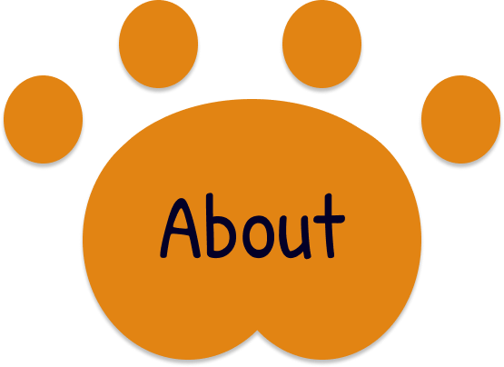
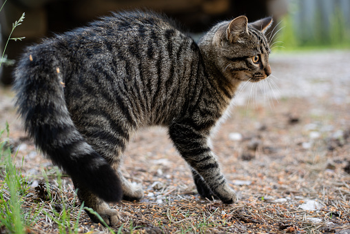

A cat's puffed up tail means that it's scared or angry.
A cat's tail shapped like a question marked and straigth means that it's happy.
A cat's tail facing the floor and a little curved means that the cat is curious.